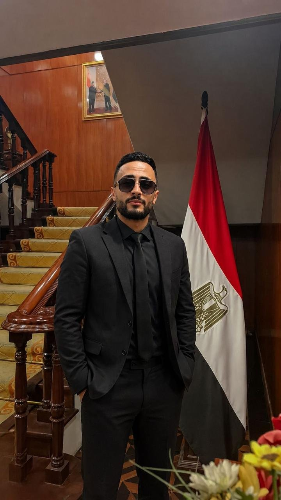
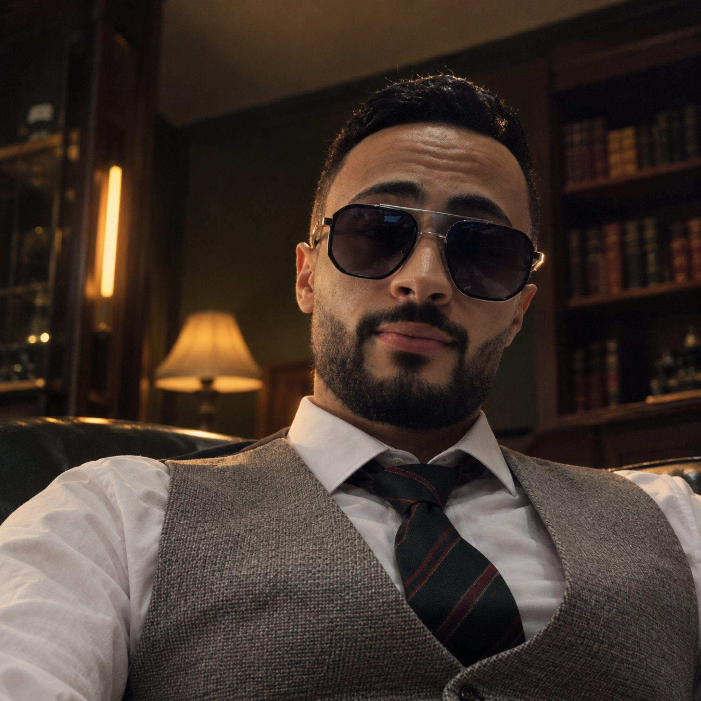
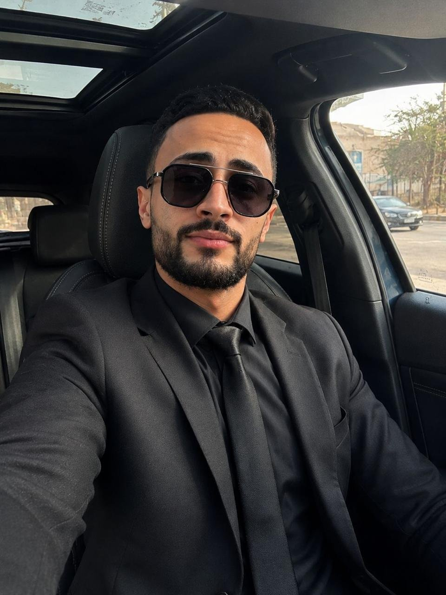
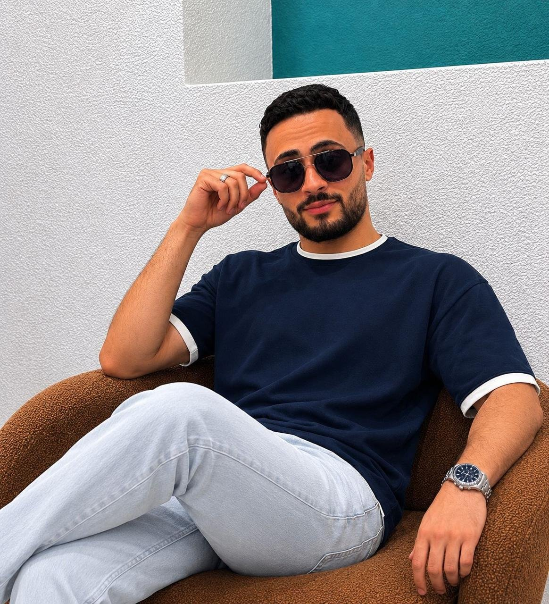

CORE PLATFORMHANDS-ON
S7-300
The Modular Workhorse
The classic modular PLC for manufacturing automation — programmed in Ladder, STL & SCL, with analog signal handling and full hardware configuration.
The Siemens S7-300 — programmed in Ladder, STL & SCL, with WinCC SCADA/HMI screens, analog I/O, encoders and motor drives, from panel wiring to full plant simulation.

Control & automation mindset.
Maintenance discipline on the floor.
My hands-on PLC platform — the classic modular S7-300, programmed in Ladder, STL & SCL with analog I/O and full hardware configuration — plus the drives, classic control panels and operator interfaces around it.
The classic modular PLC for manufacturing automation — programmed in Ladder, STL & SCL, with analog signal handling and full hardware configuration.
This is how I work — as a Control & Automation Engineer who builds and programs systems, and as a Maintenance Engineer who keeps them running reliably.
I design the logic and the panels that make machines run automatically — programming PLCs, building SCADA screens and commissioning drives so a line starts, senses, decides and acts on its own.
I keep production running — finding faults fast, fixing them properly and preventing the next breakdown. Trained on live lines, pressing machines, hydraulics and power-plant systems.
From PLC panels to production lines — I learn systems by wiring, programming and troubleshooting them, not just reading about them.

I'm a Mechatronics Technology graduate from the Higher Technological Institute in Beni Suef (2021–2025). Over five industrial trainings I programmed the Siemens S7-300 PLC in Ladder, STL and SCL, built WinCC SCADA/HMI monitoring screens, wired classic control panels, integrated motor drives and encoders, and supported maintenance on live production lines.
That combination is my strength: I can build a control system and I can keep it alive under real factory conditions — reading drawings, tracing faults, and restoring operation safely and quickly. I'm now looking for a role as a Control & Automation Engineer or Maintenance Engineer where I can do both.
Core technical modules built across HA Consulting Group, factories and national infrastructure sites.
Programming the Siemens S7-300 in Ladder, STL and SCL. Handling analog signals, configuring hardware, programming rotary encoders and designing complete WinCC monitoring screens with full plant automation simulation.
Designing and wiring classic control circuits — contactors, relays, timers and motor starters. Installing, commissioning and maintaining motor drive (VFD) units and machine control panels.
Preventive and corrective maintenance on production lines, pressing machines, hydraulic systems and electrical panels — systematic fault finding that cuts downtime and keeps equipment reliable.
Five placements from 2022 to 2026 — from power generation to advanced PLC & SCADA.
Programmed Siemens S7-300 in SCL & STL, handled analog I/O, configured hardware, integrated motor drives and rotary encoders. Designed full WinCC SCADA/HMI screens and simulated complete plant automation scenarios.
Designed and wired classic control circuits (contactors, relays, timers, starters). Programmed PLCs and installed & maintained machine control systems and motor drive units.
Supported operation and maintenance of production lines, pressing machines and electrical panels. Troubleshot production faults to reduce downtime and improve line efficiency.
Serviced and troubleshot hydraulic systems on construction and industrial equipment. Followed preventive maintenance procedures for heavy machinery.
Studied electrical, automation and control systems inside power generation facilities. Applied mechatronics principles across electrical and mechanical systems in the energy sector.
University and practical projects covering automation lines, robotics, CNC and 3D scanning. Use the filters to explore by type.
An automated line that fills and caps medical bottles in sequence — a complete mini production line controlled by PLC logic.
Designed and built a 4-axis SCARA arm for pick-and-place tasks, covering the full mechatronics stack from mechanics to code.
A tool-changing mechanism for a CNC machine that switches tools automatically during machining — reducing manual intervention and cycle time.
A scanner that captures a physical object's geometry and converts it into a 3D digital model — bridging hardware sensing and digital modelling.
Factory IO simulations, WinCC SCADA screens and hands-on demos — watch the systems in action. New videos are added from the VIDEOS list at the top of this file.
Grouped by discipline — with the tools and platforms I have actually trained and worked on.
My strongest area — Siemens ecosystem, end to end.
The hands-on side — keeping machines, circuits and systems running.
Higher Technological Institute in Beni Suef — a combined diploma-to-degree pathway in Mechatronics Technology.
Higher Technological Institute in Beni Suef · 2021 — 2025
Cumulative: Very Good · Final Year: ExcellentHigher Technological Institute in Beni Suef · 2021 — 2023
Foundation stage of the same programme, completed on the way to the B.Tech.
Specialist short courses alongside my degree and placements.
A Control & Automation or Maintenance Engineering role where I can program and commission control systems — and keep production equipment running reliably through preventive maintenance and fast, systematic troubleshooting.


I'm available for Control & Automation and Maintenance Engineering roles — and open to opportunities across Egypt. The fastest way to reach me is by phone, WhatsApp or email.